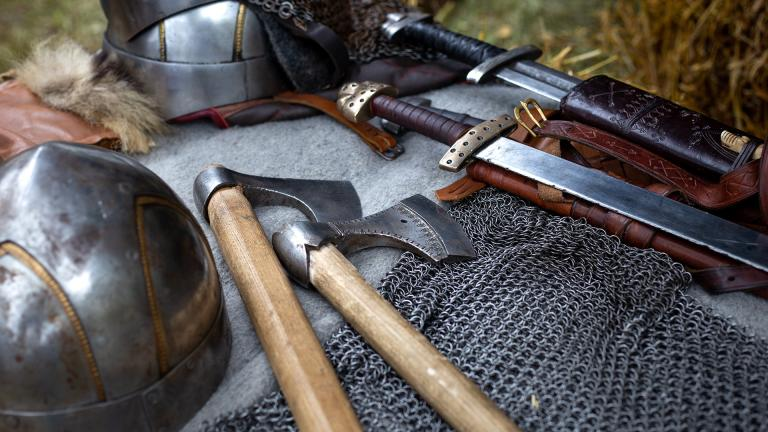
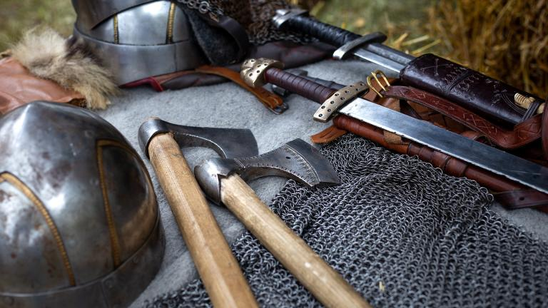

VIKINGS WEAPONS
Viking weapons were essential for both combat and status. Common weapons included spears, axes, and swords, with the spear being the most widely used due to its versatility. Axes, especially the bearded axe, were favored for their power in battle and utility in daily life. Swords were prized and often richly decorated but were expensive and mainly used by wealthy warriors. Shields were circular, made of wood, and used for defense. Vikings also used bows and arrows for long-range attacks, and many warriors wore helmets and chainmail for protection.
 
